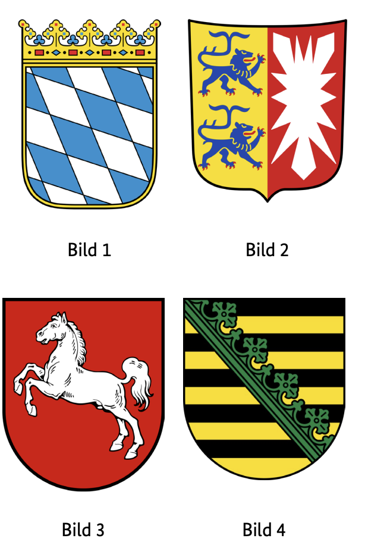
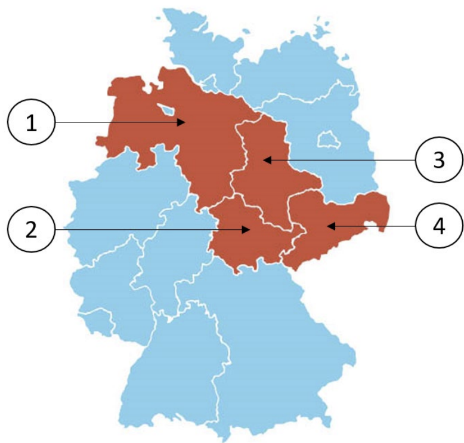

Leben in Deutschland Aşağı Saksonya (Niedersachsen) Soruları
Resmi BAMF soru havuzundaki 10 Niedersachsen (NI) eyalet sorusunun Almanca ve Türkçe açıklamalı interaktif çözümleri. Soru üzerine tıklayarak bilginizi anında test edin.
Almanya vatandaşlık ve kalıcı oturum için yapılan Leben in Deutschland (LiD) sınavında adaya toplam 33 çoktan seçmeli soru sorulur:
30 Genel Soru: Demokrasi, hukuk, tarih ve toplumsal yaşam (300 genel soru havuzundan).
3 Eyalet Sorusu: İkamet ettiğiniz eyalete özel tarih, coğrafya ve anayasa soruları (Aşağıdaki 10 eyalet sorusu havuzundan).
Sınavı geçmek için 33 sorudan en az 15 doğru (Vatandaşlık şartı) veya 17 doğru (Oryantasyon kursu başarı sertifikası) yapmanız gerekmektedir.
📝 10 Resmi Niedersachsen Sorusunu Çözün
Soru #381 (1 / 10)Federal Eyalet: Niedersachsen
Welches Wappen gehört zum Bundesland Niedersachsen?
TR: Hangi arma Aşağı Saksonya eyaletine aittir?

✅ Doğru Cevap: Şık C (Bild 3)
Soru, Alman ulusal armalarına atıfta bulunuyor. Aşağı Saksonya, Almanya'nın 16 federal eyaletinden biridir ve tarihinden karakteristik semboller içeren resmi bir armaya sahiptir. Görevde dört arma tasvir edilmiştir. Amaç, renkler, figürler ve armatik özellikler temelinde Aşağı Saksonya eyaletine uygun armayı atanmaktır.
Die Frage bezieht sich auf deutsche Landeswappen. Niedersachsen ist eines der 16 Bundesländer Deutschlands und besitzt ein offizielles Wappen mit charakteristischen Symbolen aus seiner Geschichte. In der Aufgabe werden vier Wappen abgebildet. Es geht darum, anhand von Farben, Figuren und heraldischen Merkmalen das passende Wappen dem Bundesland Niedersachsen zuzuordnen.
The question refers to German national coats of arms. Lower Saxony is one of the 16 federal states of Germany and has an official coat of arms with characteristic symbols from its history. Four coats of arms are depicted in the task. The aim is to assign the appropriate coat of arms to the state of Lower Saxony on the basis of colours, figures and heraldic features.
السؤال يتعلق بشعارات النبالة الوطنية الألمانية. ساكسونيا السفلى هي واحدة من الولايات الفيدرالية الست عشرة في ألمانيا ولديها شعار رسمي يحمل رموزا مميزة من تاريخها. تم تصوير أربعة شعارات نبالة في المهمة. الهدف هو تخصيص الشعار المناسب لولاية ساكسونيا السفلى بناء على الألوان والأشكال والملامح النبالية.
Питання стосується національних гербів Німеччини. Нижня Саксонія є однією з 16 федеративних земель Німеччини і має офіційний герб із характерними символами своєї історії. У цьому завданні зображено чотири герби. Мета полягає в тому, щоб присвоїти відповідний герб землі Нижня Саксонія на основі кольорів, фігур і геральдичних ознак.
Soru #382 (2 / 10)Federal Eyalet: Niedersachsen
Welches ist ein Landkreis in Niedersachsen?
TR: Aşağı Saksonya'da hangi bir ilçe?
✅ Doğru Cevap: Şık A (Ammerland)
Soru, Almanya'nın idari yapısıyla ilgilidir. Almanya, federal eyaletlere ayrılmıştır; bu eyaletler ise kırsal bölgeler ve bağımsız şehirlerden oluşur. Her bölge aynı federal eyalete ait değildir. Doğru cevabı bulmak için, bahsedilen bölgelerden hangisinin Aşağı Saksonya eyaletinde olduğunu bilmeniz gerekir.
Die Frage bezieht sich auf die Verwaltungsstruktur Deutschlands. Deutschland ist in Bundesländer gegliedert, die wiederum aus Landkreisen und kreisfreien Städten bestehen. Nicht jeder Landkreis gehört zum gleichen Bundesland. Um die richtige Antwort zu finden, muss man wissen, welches der genannten Gebiete im Bundesland Niedersachsen liegt.
The question relates to the administrative structure of Germany. Germany is divided into federal states, which in turn consist of rural districts and independent cities. Not every district belongs to the same federal state. To find the right answer, you have to know which of the areas mentioned is in the state of Lower Saxony.
السؤال يتعلق بالهيكل الإداري لألمانيا. تنقسم ألمانيا إلى ولايات اتحادية، والتي بدورها تتكون من مناطق ريفية ومدن مستقلة. ليست كل دائرة انتخابية تنتمي إلى نفس الولاية الفيدرالية. للعثور على الإجابة الصحيحة، عليك أن تعرف أي من المناطق المذكورة تقع في ولاية ساكسونيا السفلى.
Питання стосується адміністративної структури Німеччини. Німеччина поділена на федеральні землі, які, у свою чергу, складаються з сільських районів і незалежних міст. Не кожен округ належить до однієї федеральної землі. Щоб знайти правильну відповідь, потрібно знати, яка з згаданих територій належить до землі Нижня Саксонія.
Soru #383 (3 / 10)Federal Eyalet: Niedersachsen
Für wie viele Jahre wird der Landtag in Niedersachsen gewählt?
TR: Aşağı Saksonya'daki eyalet parlamentosu kaç yıl boyunca seçilecek?
✅ Doğru Cevap: Şık C (5)
Soru, Aşağı Saksonya eyaletinin eyalet parlamentosuna atıfta bulunmaktadır. Eyalet parlamentosu, eyalet parlamentosudur ve oy hakkı olan vatandaşlar tarafından düzenli aralıklarla seçilir. Her seçim, milletvekillerinin parlamentoda ne kadar süre kalacağını ve eyalet düzeyinde siyasi kararlar alacağını belirler. Bu seçim süresi yasayla belirlenir.
Die Frage bezieht sich auf den Landtag des Bundeslandes Niedersachsen. Der Landtag ist das Landesparlament und wird in regelmäßigen Abständen von den wahlberechtigten Bürgerinnen und Bürgern gewählt. Jede Wahl bestimmt, wie lange die Abgeordneten im Parlament sitzen und politische Entscheidungen auf Landesebene treffen. Die Dauer dieser Wahlperiode ist gesetzlich festgelegt.
The question refers to the state parliament of the state of Lower Saxony. The state parliament is the state parliament and is elected at regular intervals by the citizens entitled to vote. Each election determines how long the members of parliament sit in parliament and make political decisions at the state level. The duration of this electoral period is determined by law.
السؤال يتعلق ببرلمان ولاية ساكسونيا السفلى. البرلمان الحكومي هو البرلمان المحلي وينتخب على فترات منتظمة من قبل المواطنين المؤهلين للتصويت. تحدد كل انتخابات مدة جلوس أعضاء البرلمان في البرلمان واتخاذ القرارات السياسية على مستوى الولاية. يتم تحديد مدة هذه الفترة الانتخابية بموجب القانون.
Питання стосується земельного парламенту землі Нижня Саксонія. Державний парламент є державним парламентом і обирається з регулярними інтервалами громадянами, які мають право голосу. Кожні вибори визначають, як довго члени парламенту перебуватимуть у парламенті та прийматимуть політичні рішення на рівні штатів. Тривалість цього виборчого періоду визначається законом.
Soru #384 (4 / 10)Federal Eyalet: Niedersachsen
Ab welchem Alter darf man in Niedersachsen bei Kommunalwahlen wählen?
TR: Aşağı Saksonya'da yerel seçimlerde hangi yaştan oy verebilirsiniz?
?
✅ Doğru Cevap: Şık B (16)
Almanya'daki hayat için önemli bir soru
Wichtige Frage für das Leben in Deutschland
Important question for life in Germany
سؤال مهم للحياة في ألمانيا
Важливе питання для життя в Німеччині
Soru #385 (5 / 10)Federal Eyalet: Niedersachsen
Welche Farben hat die Landesflagge von Niedersachsen?
TR: Aşağı Saksonya devlet bayrağı hangi renklere sahiptir?
✅ Doğru Cevap: Şık B (schwarz-rot-gold)
Soru, Alman devletleri ve onların resmi sembolleri hakkında bilgi edinmekle ilgilidir. Ülke bayrakları önemli tanımlama özellikleridir ve genellikle tarihsel veya siyasi öneme sahip belirli renklerden oluşur. Burada, Aşağı Saksonya eyaletinin bayrağına ait olan renk kombinasyonunun belirlenmesi önemlidir.
Die Frage bezieht sich auf Wissen über deutsche Bundesländer und ihre offiziellen Symbole. Landesflaggen sind wichtige Identifikationsmerkmale und bestehen meist aus bestimmten Farben, die historische oder politische Bedeutung haben. Hier soll erkannt werden, welche Farbkombination zur Flagge des Bundeslandes Niedersachsen gehört.
The question refers to knowledge about German states and their official symbols. Country flags are important identification features and usually consist of certain colors that have historical or political significance. Here it is to be recognized which color combination belongs to the flag of the state of Lower Saxony.
السؤال يتعلق بالمعرفة حول الدول الألمانية ورموزها الرسمية. تعد أعلام الدول من سمات التعريف المهمة وغالبا ما تتكون من ألوان معينة لها أهمية تاريخية أو سياسية. هنا يجب التعرف على أي تركيبة لونية تنتمي إلى علم ولاية ساكسونيا السفلى.
Питання стосується знань про німецькі держави та їхні офіційні символи. Прапори країни є важливими ознаками ідентифікації і зазвичай складаються з певних кольорів, що мають історичне або політичне значення. Тут слід визначити, яка кольорова комбінація належить прапору землі Нижня Саксонія.
Soru #386 (6 / 10)Federal Eyalet: Niedersachsen
Wo können Sie sich in Niedersachsen über politische Themen informieren?
TR: Aşağı Saksonya'daki siyasi konuları nereden öğrenebilirsiniz?
?
✅ Doğru Cevap: Şık A (bei der Landeszentrale für politische Bildung)
Almanya'daki hayat için önemli bir soru
Wichtige Frage für das Leben in Deutschland
Important question for life in Germany
سؤال مهم للحياة في ألمانيا
Важливе питання для життя в Німеччині
Soru #387 (7 / 10)Federal Eyalet: Niedersachsen
Die Landeshauptstadt von Niedersachsen heißt …
TR: Aşağı Saksonya'nın eyalet başkenti ...
✅ Doğru Cevap: Şık A (Hannover)
Almanya'da her eyalet idari alanlara ayrılır ve kendi eyalet başkenti vardır; hükümet ve parlamento burada kendi sandalyelerini oluşturur. Aşağı Saksonya, Almanya'nın kuzeyinde yer almakta olup alan açısından en büyük federal eyaletlerden biridir. Soru, Aşağı Saksonya için bu merkezi siyasi ve idari işlevi hangi şehrin üstleneceğiyle ilgilidir. Cevap seçenekleri, Aşağı Saksonya'da bulunan veya eyaletle yakından bağlantılı olan tanınmış şehirleri belirtir.
In Deutschland ist jedes Bundesland in Verwaltungsbereiche gegliedert und besitzt eine eigene Landeshauptstadt, in der Regierung und Parlament ihren Sitz haben. Niedersachsen liegt im Norden Deutschlands und ist eines der flächenmäßig größten Bundesländer. Die Frage bezieht sich darauf, welche Stadt diese zentrale politische und administrative Funktion für Niedersachsen übernimmt. Die Antwortmöglichkeiten nennen bekannte Städte, die alle in Niedersachsen liegen oder eng mit dem Land verbunden sind.
In Germany, each state is divided into administrative areas and has its own state capital, where the government and parliament have their seats. Lower Saxony is located in the north of Germany and is one of the largest federal states in terms of area. The question relates to which city will take on this central political and administrative function for Lower Saxony. The answer options name well-known cities, all of which are located in Lower Saxony or are closely connected to the state.
في ألمانيا، تنقسم كل ولاية إلى مناطق إدارية ولها عاصمة ولاية خاصة بها، حيث تتواجد مقاعد الحكومة والبرلمان. تقع ساكسونيا السفلى في شمال ألمانيا وهي واحدة من أكبر الولايات الفيدرالية من حيث المساحة. السؤال يتعلق بأي مدينة ستتولى هذه الوظيفة السياسية والإدارية المركزية لساكسونيا السفلى. خيارات الإجابة تذكر مدنا معروفة، جميعها تقع في ساكسونيا السفلى أو مرتبطة ارتباطا وثيقا بالولاية.
У Німеччині кожна земля поділена на адміністративні райони і має власну столицю, де розташовані уряд і парламент. Нижня Саксонія розташована на півночі Німеччини і є однією з найбільших федеральних земель за площею. Питання стосується того, яке місто виконуватиме цю центральну політичну та адміністративну функцію для Нижньої Саксонії. Варіанти відповіді називають відомі міста, усі з яких розташовані в Нижній Саксонії або тісно пов'язані з землею.
Soru #388 (8 / 10)Federal Eyalet: Niedersachsen
Welches Bundesland ist Niedersachsen?
TR: Aşağı Saksonya hangi eyalettir?

✅ Doğru Cevap: Şık A (1)
Soru, bir Alman federal eyaletinin coğrafi sınıflandırmasıyla ilgilidir. Almanya'da genellikle numaralandırılan veya haritalarda işaretlenen 16 federal eyalet bulunmaktadır. Cevap seçenekleri farklı numaraları temsil eder ve her biri belirli bir federal eyalete atanabiliyor. Doğru cevabı bulmak için, Aşağı Saksonya eyaleti için ilgili genel haritada veya listede hangi numaranın olduğunu bilmeniz gerekir.
Die Frage bezieht sich auf die geografische Einordnung eines deutschen Bundeslandes. In Deutschland gibt es 16 Bundesländer, die oft nummeriert oder auf Karten gekennzeichnet werden. Die Antwortmöglichkeiten stellen verschiedene Nummern dar, die jeweils einem bestimmten Bundesland zugeordnet sein könnten. Um die richtige Antwort zu finden, muss man wissen, welche Nummer auf der entsprechenden Übersichtskarte oder Liste für das Bundesland Niedersachsen steht.
The question relates to the geographical classification of a German federal state. There are 16 federal states in Germany, which are often numbered or marked on maps. The answer options represent different numbers, each of which could be assigned to a specific federal state. In order to find the right answer, you have to know which number is on the corresponding overview map or list for the state of Lower Saxony.
السؤال يتعلق بالتصنيف الجغرافي للدولة الفيدرالية الألمانية. هناك 16 ولاية اتحادية في ألمانيا، وغالبا ما يتم ترقيمها أو تمييزها على الخرائط. خيارات الإجابة تمثل أرقاما مختلفة، يمكن تعيين كل منها لولاية فيدرالية محددة. لكي تجد الإجابة الصحيحة، يجب أن تعرف أي رقم موجود في خريطة أو قائمة النظرة العامة المقابلة لولاية ساكسونيا السفلى.
Питання стосується географічної класифікації німецької федеральної землі. У Німеччині є 16 федеральних земель, які часто нумеруються або позначаються на картах. Варіанти відповіді представляють різні номери, кожен з яких може бути присвоєний конкретній федеральній землі. Щоб знайти правильну відповідь, потрібно знати, яке число знаходиться на відповідній оглядовій карті або списку землі Нижня Саксонія.
Soru #389 (9 / 10)Federal Eyalet: Niedersachsen
Wie nennt man die Regierungschefin / den Regierungschef in Niedersachsen?
TR: Hükümet başkanına ne diyorsunuz?
Aşağı Saksonya mı?
✅ Doğru Cevap: Şık D (Ministerpräsidentin / Ministerpräsident)
Almanya'daki hayat için önemli bir soru
Wichtige Frage für das Leben in Deutschland
Important question for life in Germany
سؤال مهم للحياة في ألمانيا
Важливе питання для життя в Німеччині
Soru #390 (10 / 10)Federal Eyalet: Niedersachsen
Welche Ministerin / welchen Minister hat Niedersachsen nicht?
TR: Aşağı Saksonya'da hangi bakan yok?
✅ Doğru Cevap: Şık B (Außenministerin / Außenminister)
Soru, Aşağı Saksonya eyalet hükümetinin yapısıyla ilgilidir. Her federal eyaletin kendi bakanlıkları vardır ve bu bakanlıkların sorumlulukları federal hükümetinkinden farklı olabilir. Bazı departmanlar eyalet düzeyinde yaygındır, bazıları ise sadece federal düzeyde var veya farklı isimlere sahiptir. Doğru cevabı bulmak için, Aşağı Saksonya'daki hangi bakanlıkların aslında eyalet hükümetinin parçası olduğunu bilmeniz gerekir.
Die Frage bezieht sich auf die Struktur der Landesregierung von Niedersachsen. Jedes Bundesland hat eigene Ministerien, deren Zuständigkeiten sich von denen der Bundesregierung unterscheiden können. Einige Ressorts sind auf Landesebene üblich, andere existieren nur auf Bundesebene oder heißen anders. Um die richtige Antwort zu finden, muss man wissen, welche Ministerien in Niedersachsen tatsächlich Teil der Landesregierung sind.
The question relates to the structure of the state government of Lower Saxony. Each federal state has its own ministries, whose responsibilities may differ from those of the federal government. Some departments are common at the state level, others only exist at the federal level or have different names. In order to find the right answer, you have to know which ministries in Lower Saxony are actually part of the state government.
المسألة تتعلق بهيكل حكومة ولاية ساكسونيا السفلى. لكل ولاية اتحادية وزاراتها الخاصة، وقد تختلف مسؤولياتها عن مسؤوليات الحكومة الفيدرالية. بعض الأقسام شائعة على مستوى الولايات، والبعض الآخر موجود فقط على المستوى الفيدرالي أو له أسماء مختلفة. لكي تجد الإجابة الصحيحة، عليك أن تعرف أي الوزارات في ساكسونيا السفلى هي فعلا جزء من حكومة الولاية.
Питання стосується структури уряду землі Нижня Саксонія. Кожна федеральна земля має власні міністерства, чиї обов'язки можуть відрізнятися від обов'язків федерального уряду. Деякі департаменти поширені на рівні штатів, інші існують лише на федеральному рівні або мають різні назви. Щоб знайти правильну відповідь, потрібно знати, які міністерства в Нижній Саксонії насправді входять до складу земельного уряду.
300 Genel Soruyu ve Eyalet Sorularını Eksiksiz Çalışın
DeutschLernen LiD Trainer'da tüm 310 soruyu 5 farklı dilde (Türkçe, İngilizce, Arapça, Ukraynaca, Almanca) çözebilir, deneme sınavı simülasyonu yapabilirsiniz.